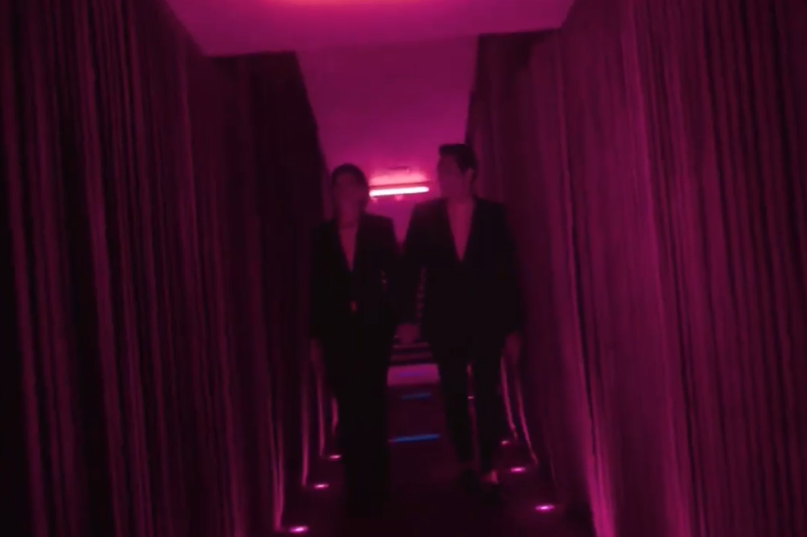
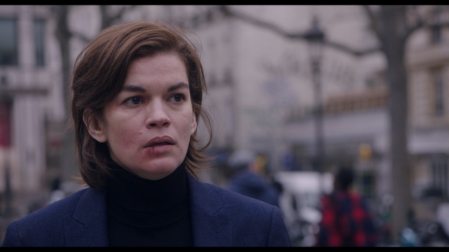

Reflexió sobre la pel·lícula i els rols invertits.
Un home molt “putero” i molt masclista acaba en un món paral·lel on els rols de gènere estàn invertits i les dones son hembristes amb els homes, llavors a ell al principi li agrada però al final acaba fart, també té una relació tòxica amb una noia que és igual de “putera” que ell.
Aquesta es dedicaba a coleccionar canicas per cada home amb el qual estava, i això, a en Damiàn no li va agradar. Al final acaben en una baralla després de tindre molts problemes en la seva relació i s'acaben barallant de forma bastant patètica i amb una coreografia molt mediocre i els dos acaben desmallats i en el terra, llavors s'entén que en Damiàn torna al seu món com a feminista i la noia amb la que estava en la seva relació tan tòxica també acab en el seu món, el d’en Damiàn.

Hi ha un moment en el que va a una cita i el lloc és un puticlub i hi ha un noi fent balls en una barra i està quasi sense roba. La jefa li fa un gest com per dir-li que si la complau sexualment l’ajudarà amb un projecte.
Hi han molts comentaris tant masclistes com hembristes. Las cartas del pòker estan al revés. No és algo curiós després de tot però és sorprenent que es fixin en detalls tant petits. Podríem haver posat molt més, però només hem volgut destacar les que més ens han sobtat.
A nosaltres ens ha servit per a entendre millor la desigualtat de gènere, ja que a l’hora d’invertir els papers, et fa adonar-te de les diferències ja que mostra la desigualtat d’una manera clara i propera.
Ajuda a posar-se a la pell de les dones i entendre situacions que sovint passen desapercebudes. És una bona eina per reflexionar sobre el masclisme amb humor. La recomanaria a joves i adults, sobretot per aprendre en grup.

El que més m’ha agradat ha sigut quan la pel·lícula ha acabat, em refereixo a com la noia viatja al món d’en Damiàn i se n’adona que tot el que deia ell era veritat. El que menys m’ha agradat ha sigut que no paraven de fer acudits dolents...
L’escena que més m’ha fet pensar és en la que l’amic d’en Damiàn pateix una infidelitat per part de la seva dona i fa com si no passés res. En general em sembla que la repetició constant d'acudits fa que es faci pesada.